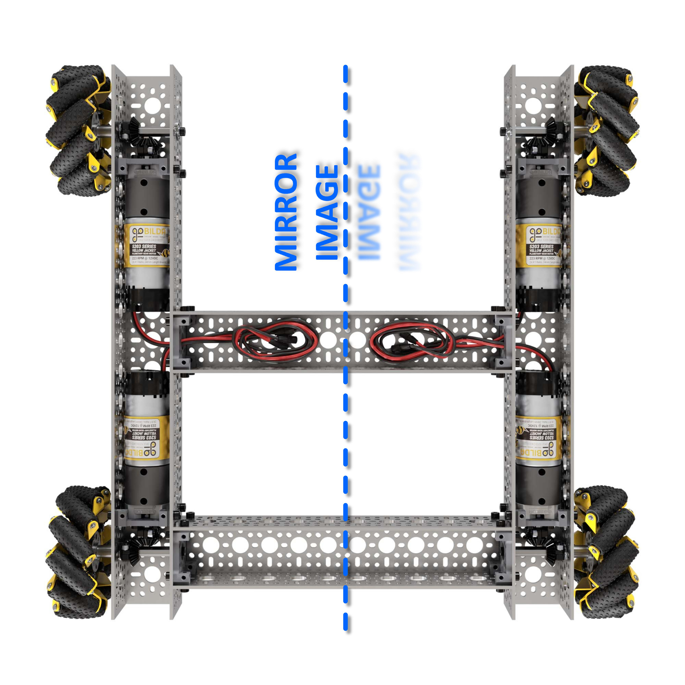

Time to make the robot move. You've printed telemetry and read the gamepad — now you'll turn those stick values into motor power. We'll start with the simplest kind of driving: tank drive.
Think about how a bulldozer or a military tank turns. It has no steering wheel — just two tracks, one on the left and one on the right. To go straight, both tracks move at the same speed. To turn, one side moves faster than the other. To spin in place, the two sides move in opposite directions.
Tank drive steers by running the left and right sides at different speeds. Same speed = straight. Different speeds = turn. Opposite = spin.
Our robot has four mecanum wheels, but for now we'll ignore the fancy sideways stuff and drive it like a tank: the left stick controls everything — push forward to go forward, push sideways to spin.
The robot has four motors, one at each corner: frontLeft and backLeft on the left
side, frontRight and backRight on the right. For tank drive, both left motors always
get the same power and both right motors get the same power — the two sides act like a tank's two
tracks.
The hardware map connects a code name to a physical motor. Each motor has a configured name
like "front_left_motor" that matches the robot's wiring.
The left motors are mounted as a mirror image of the right ones. Without reversing, sending positive power would spin the left side backward and the right side forward — the robot would spin instead of driving straight. Reversing the left side makes positive power mean "forward" for every wheel.

Go to the Drive : Setup spot in INIT and create the four motors:
Drive : Setup
DcMotor frontLeft = hardwareMap.get(DcMotor.class, "front_left_motor");
DcMotor frontRight = hardwareMap.get(DcMotor.class, "front_right_motor");
DcMotor backLeft = hardwareMap.get(DcMotor.class, "back_left_motor");
DcMotor backRight = hardwareMap.get(DcMotor.class, "back_right_motor");
frontLeft.setDirection(DcMotor.Direction.REVERSE);
backLeft.setDirection(DcMotor.Direction.REVERSE);The left stick gives us two values we care about:
These are doubles from -1.0 to 1.0. A gentle push might give 0.2;
letting go gives 0.0. That's proportional control — the further you push, the
faster the wheels go.

Just like last lesson, pushing the stick up reports a negative Y. That feels backward, so we negate it with a minus sign so that "stick up" means "drive forward."
We combine drive and spin into a power for each side:
drive + spindrive - spinWalk through it. Straight forward: drive = 1.0, spin = 0 → left 1.0,
right 1.0 → both sides equal, robot goes straight. Spin right: drive = 0,
spin = 1.0 → left 1.0, right -1.0 → left forward, right backward,
robot spins. We also multiply by 0.5 to stay at half speed while learning — bump it to
1.0 once you're comfortable.
setPower() sets a motor's speed, from -1.0 (full reverse) to 1.0 (full
forward); 0 stops. Both left motors get leftPower, both right motors get
rightPower — that's what makes it tank drive.
Go to the Drive : Loop spot inside the run loop and add the math and the four
setPower calls:
Drive : Loop
double drive = -gamepad1.left_stick_y;
double spin = gamepad1.left_stick_x;
double leftPower = (drive + spin) * 0.5;
double rightPower = (drive - spin) * 0.5;
backLeft.setPower(leftPower);
frontLeft.setPower(leftPower);
frontRight.setPower(rightPower);
backRight.setPower(rightPower);If the robot spins when you push straight forward, you probably didn't reverse the left motors —
check the two setDirection(DcMotor.Direction.REVERSE) lines. If nothing moves, make sure your
setPower lines are inside the while (opModeIsActive()) braces, and that each
line ends with a semicolon.
That's real driving. Right now the robot can only go forward, backward, and spin — it can't strafe sideways yet, even with mecanum wheels. A later lesson unlocks that by driving all four wheels independently instead of pairing them as left and right.